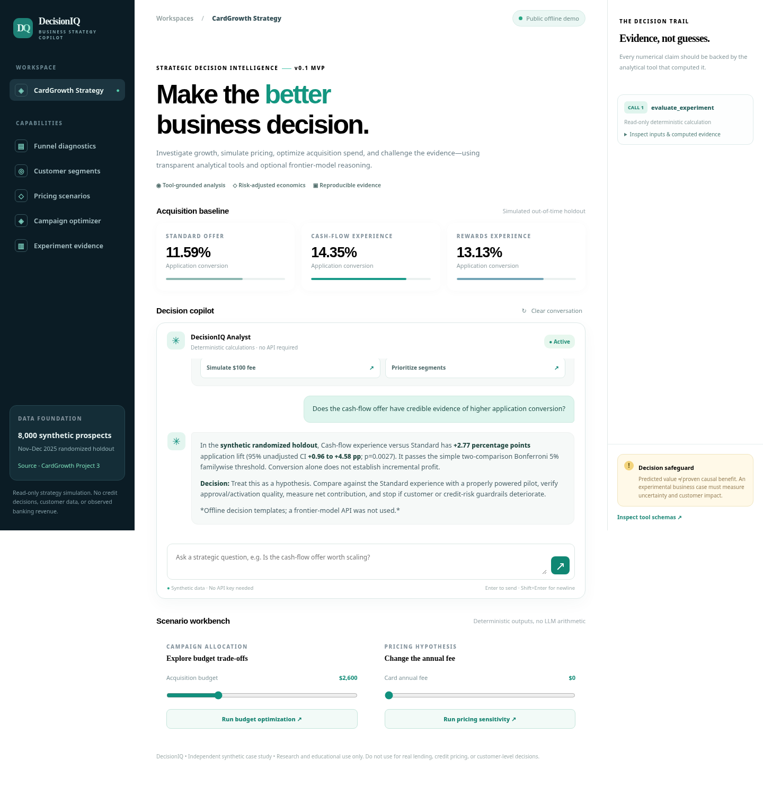

48,000
Synthetic prospective businesses
Reproducible three-offer acquisition experiment, with time-separated training, validation, and test periods.
DecisionIQ combines business analysis, predictive modeling, pricing simulation, and campaign optimization. Explore an interactive CardGrowth strategy lab—no login, model API key, or running server required.
The live lab is a browser-based decision dashboard. The full conversational FastAPI/LLM/MCP copilot is provided as locally runnable source, not hosted in this free demo.

Above: actual DecisionIQ web-app screenshot. Its server-backed chat requires local Python or optional cloud hosting.
Reproducible three-offer acquisition experiment, with time-separated training, validation, and test periods.
Known expected incremental first-year contribution in the data generator. This is NOT actual bank revenue or a verified treatment effect.
Funnel diagnostics, segment analysis, pricing sensitivity, campaign allocation, and experimental evaluation in the Python copilot.
GitHub Pages serves the HTML/JavaScript CardGrowth lab directly from docs/lab/. It runs without a Python backend, a paid API, or a credit card.
FastAPI + five validated financial tools + optional OpenAI Responses API and an MCP adapter. Clone the repository, run uvicorn main:app --reload --port 8080, and use the local interface.
Synthetic holdout scores, decision trace, cost assumptions, statistical tests, and documented limitations enable an audit of recommendations.
No customer-level credit decisions, no sensitive banking records, no browser-exposed API keys. A paid frontier model is optional and private.